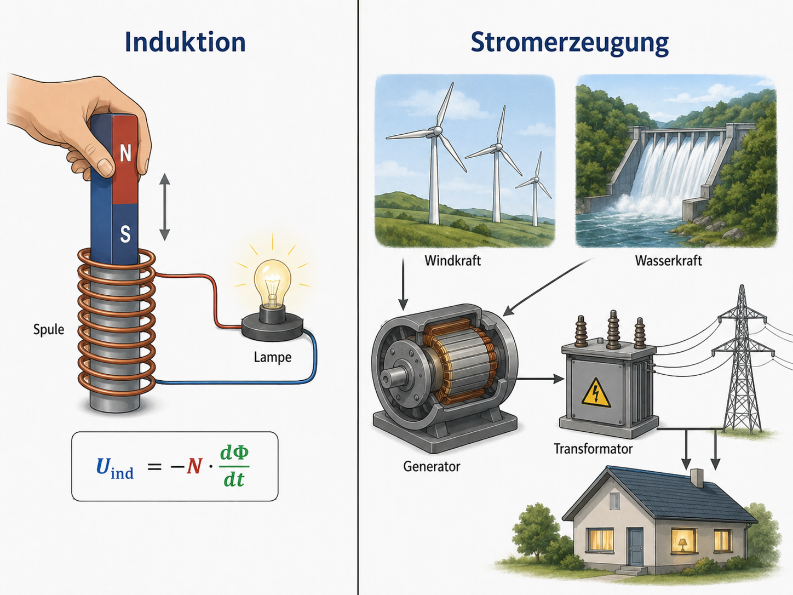

Leitfrage
Wie pendelt Energie zwischen elektrischem und magnetischem Feld?
Funktechnik, Schwingkreise und Rekuperation beim E-Auto nutzen Energieumwandlungen in Feldern.
Startcheck vor dem Lernpfad
Markiere ehrlich, was du zum Thema Elektromagnetische Schwingung und Energierückgewinnung bereits sicher kannst. Danach erhältst du eine kurze Empfehlung für deinen Lernweg.
Starte mit einer Vermutung
Funktechnik, Schwingkreise und Rekuperation beim E-Auto nutzen Energieumwandlungen in Feldern.
Arbeitsauftrag: Formuliere eine Vermutung zur Leitfrage. Nutze mindestens einen Fachbegriff, den du bereits kennst.
Modell und zentrale Aussage
Im LC-Kreis wandelt sich elektrische Feldenergie des Kondensators in magnetische Feldenergie der Spule und zurück.
Welche Aussage passt am besten?
Untersuchen
Versuchsidee
Simulation oder Demonstration eines LC-Schwingkreises; Energiespeicherzustände ordnen.
Material
Simulation, Spule/Kondensator-Modellkarten, ggf. Oszilloskop-Demonstration.
Sicherheit
Bei realen Schwingkreisen nur Kleinspannung; Kondensatoren entladen.
Dokumentation
Halte mindestens drei Messwerte, eine Beobachtung und eine Deutung fest. Wenn kein Realexperiment möglich ist, arbeite mit Simulation oder bereitgestellten Daten.
Parameter verändern und berechnen
Verändere die Werte. Erkläre anschließend, welche Größe proportional, antiproportional oder nichtlinear wirkt.
Finde den Fehler
Eine Person schreibt: „Ich setze die Zahlen direkt ein und lasse die Einheiten weg. Wenn das Ergebnis groß aussieht, stimmt die Erklärung wahrscheinlich.“
Aufgabe: Korrigiere diese Aussage mit Bezug auf das Thema Elektromagnetische Schwingung und Energierückgewinnung.
Übertrage dein Wissen
Wähle eine Anwendung aus dem Kontext und erkläre sie in vier Sätzen: Phänomen, Modell, Formel/Größe, Grenze der Erklärung.
Sprinteraufgabe
Erstelle ein eigenes Zahlenbeispiel mit realistischen Einheiten und berechne die zentrale Größe. Tausche es mit einer Partnerin oder einem Partner.
Übungsaufgaben und Prüfungsfragen
Bearbeite die Aufgaben schriftlich. Die Prüfung der Felder achtet auf zentrale Fachbegriffe, Einheiten und eine erkennbare Begründung. Danach kannst du den Erwartungshorizont aufklappen und deine Lösung verbessern.
Ein Schwingkreis hat L = 20 mH und C = 100 µF. Berechne Schwingungsdauer T und Frequenz f.
Beschreibe den periodischen Energieaustausch zwischen elektrischem Feld des Kondensators und magnetischem Feld der Spule.
Erläutern Sie, warum reale elektromagnetische Schwingungen gedämpft sind und wie Energierückgewinnung technisch genutzt werden kann.
Erwartungshorizont nach eigener Bearbeitung öffnen
- T = 2π√(LC) = 2π√(0,020·100·10⁻⁶) ≈ 8,9 ms; f ≈ 112 Hz.
- Die Energie wechselt zwischen Kondensatorfeld und Spulenfeld; im idealen Modell bleibt die Gesamtenergie erhalten.
- Reale Widerstände wandeln Energie in Wärme um. Rückgewinnung nutzt Bewegungsenergie, z. B. beim regenerativen Bremsen.
Übungsaufgaben: LC-Schwingkreis in einer Energierückgewinnung
Recherchebasis: Die Aufgabe ist neu formuliert und trainiert typische Kompetenzen: Materialbezug, Operatoren, Berechnung, Diagramm-/Modellinterpretation und Bewertung. Es wird keine Originalaufgabe übernommen.
- Berechnen Sie die Eigenfrequenz des Schwingkreises. (5 BE)
- Berechnen Sie die anfangs im Kondensator gespeicherte Energie. (4 BE)
- Beschreiben Sie die Energieumwandlung während einer Schwingung. (4 BE)
- Bewerten Sie, warum reale Energierückgewinnungssysteme nicht verlustfrei arbeiten. (4 BE)
Erwartungshorizont / Lösungsskizze öffnen
f = 1/(2π√(LC)) = 1/(2π√(0,025·100·10⁻⁶)) ≈ 101 Hz. E_C = 1/2CU² = 0,5·100·10⁻⁶ F·24² V² = 0,0288 J. Energie pendelt zwischen elektrischem Feld des Kondensators und magnetischem Feld der Spule. Reale Systeme besitzen Widerstände, Wirbelstromverluste, Schaltverluste und Abstrahlung.
Was muss am Ende sitzen?
- Elektromagnetische Schwingung qualitativ beschreiben.
- Energieaustausch zwischen Kondensator und Spule modellieren.
- Energierückgewinnung bei Antriebssystemen beurteilen.
- Schreibe die Leitfrage als beantworteten Merksatz um.
- Notiere die zentrale Formel mit Bedeutung der Größen.
- Nenne ein Experiment oder eine Anwendung.
- Erkläre eine typische Fehlvorstellung.
Formeln sicher auswählen, umstellen und mit Einheiten prüfen
Trainiere den typischen Klausurweg: gegeben – gesucht – Formel – Umformen – Einsetzen – Einheit – Deutung.
Zentrale Formeln
Dein Rechenweg
- Wähle eine passende Formel zum Thema und begründe die Wahl.
- Stelle sie nach einer anderen Größe um.
- Erfinde einen kurzen Zahlenwert und prüfe die Einheit.
Diagramme auswerten statt nur ablesen
Passende Diagramme in diesem Inhaltsfeld: U_ind(t)-Diagramme, Flussänderungen und Wechselspannungsverläufe. Achte immer auf Achsen, Einheiten, Steigung, Schnittpunkte und den physikalischen Kontext.
Finde den Fehler und begrenze das Modell
Arbeite wie in einer Klausur: Fehler markieren, fachlich korrigieren, Modellannahme nennen.
Verbinde dieses Thema mit anderen Inhaltsfeldern
Physik wird in Klausuren oft vernetzt geprüft. Wähle mindestens zwei passende Querverweise aus und begründe einen Zusammenhang.
Induktionsmodell
Verändere Windungszahl und Änderungsdauer. Beschreibe, wann der Betrag der Induktionsspannung groß wird.
Meine Sicherung kopieren
Formuliere zuerst einen kurzen Merksatz. Danach erzeugst du einen Kopiertext für dein digitales Heft oder für eine Abgabe.
Der Text enthält Lernpfad, Fortschritt, Diagnose-Code und deine bisherigen Textantworten.